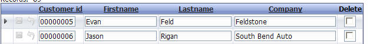
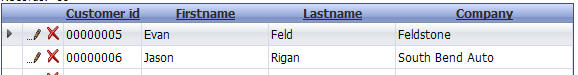
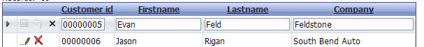

Updateable Grids - Edit On Demand
Property name: 'Row edit style' ('Update Properties' pane)
Previously, if a Grid was updateable, then all of the rows in the Grid would be displayed using edit controls for each field (i.e. TextBoxes, TextAreas, etc.).
Now, there is a new option called 'Edit On Demand'. When you select this option, the Grid is shown as using labels for each control. You can then double click on a field, or click the Edit icon, to turn that row into edit mode. You can specify if more than one row at a time can be in edit mode. If only one row is allowed in edit mode at a time, then when you put another row into edit mode, the row that is currently in edit mode is turned back into view mode.
|  |
|
All rows are editable (V9 and older style) |
|  |
|
Grid rows are editable on demand |
|  |
|
Row 1 of the Grid has been put into edit mode |